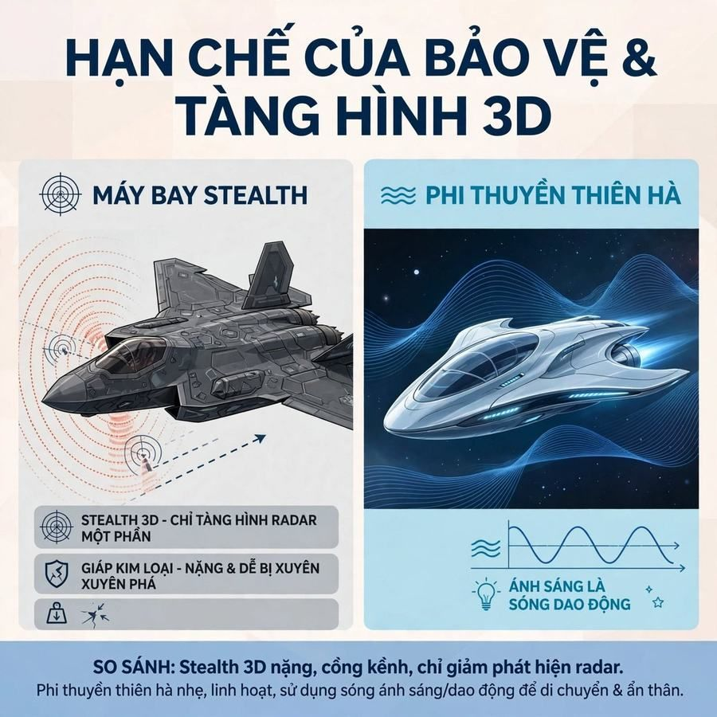
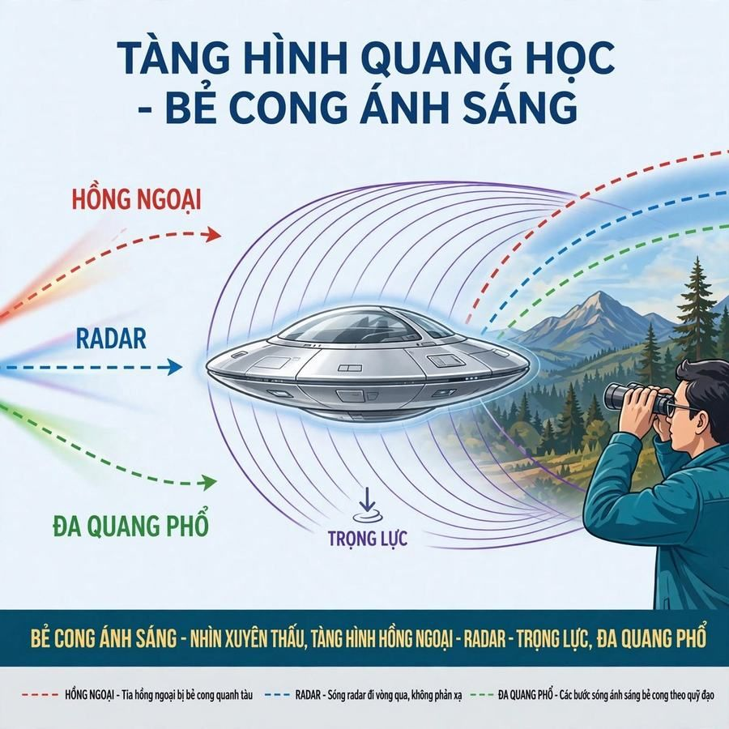
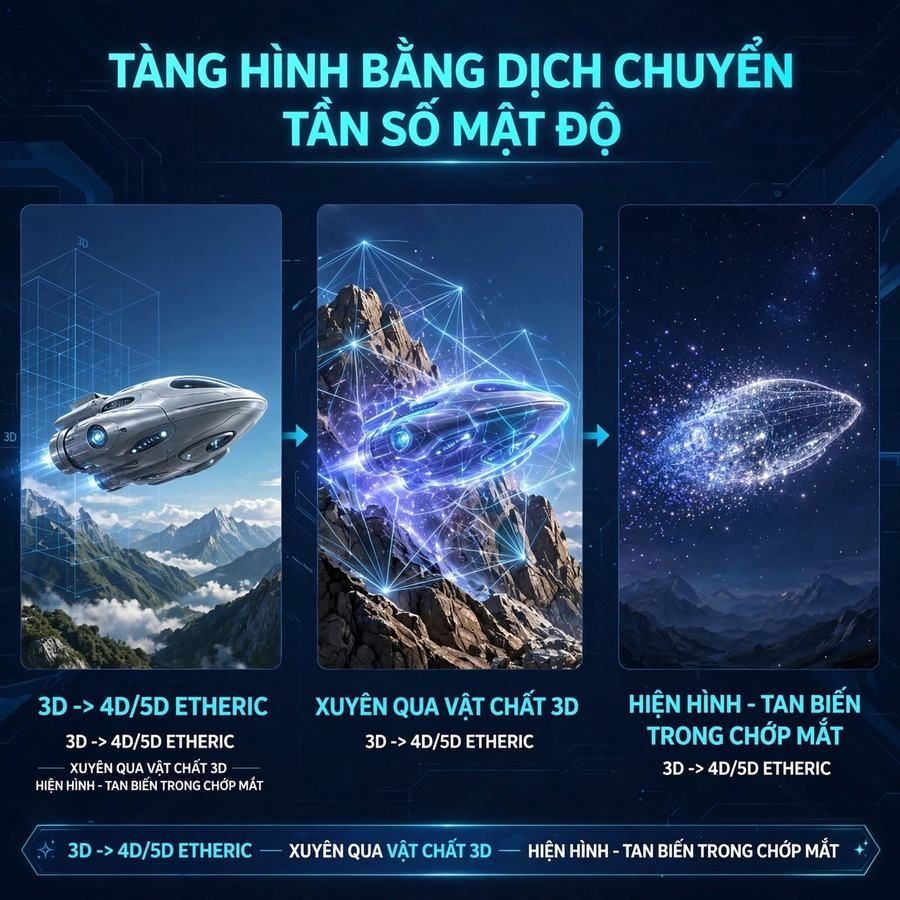
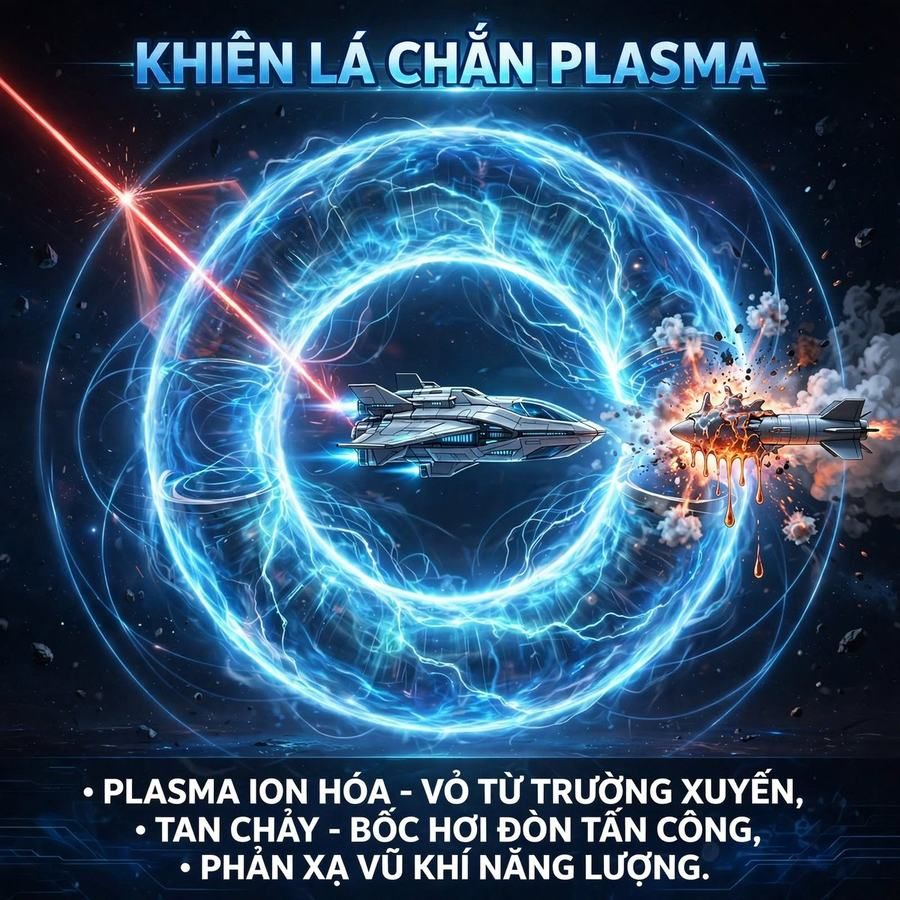
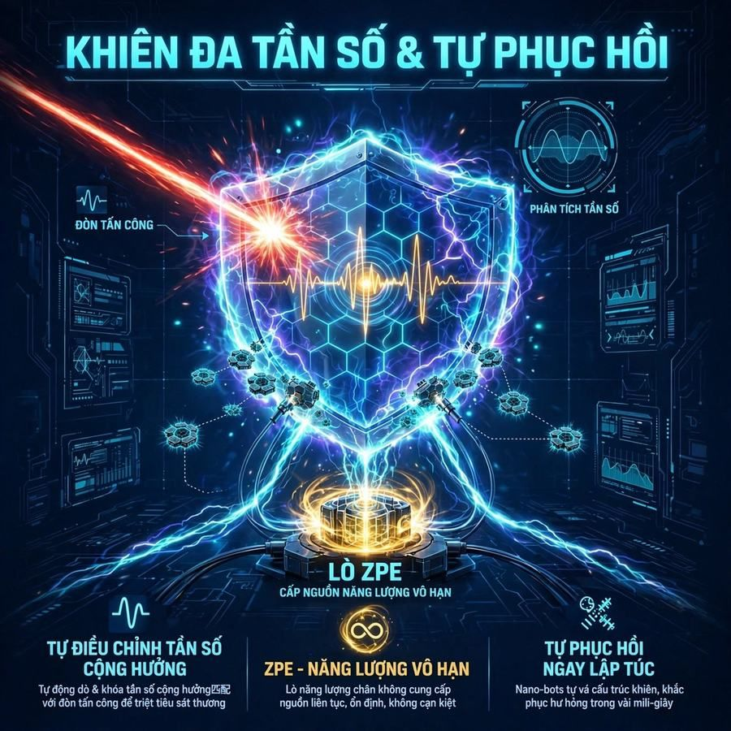
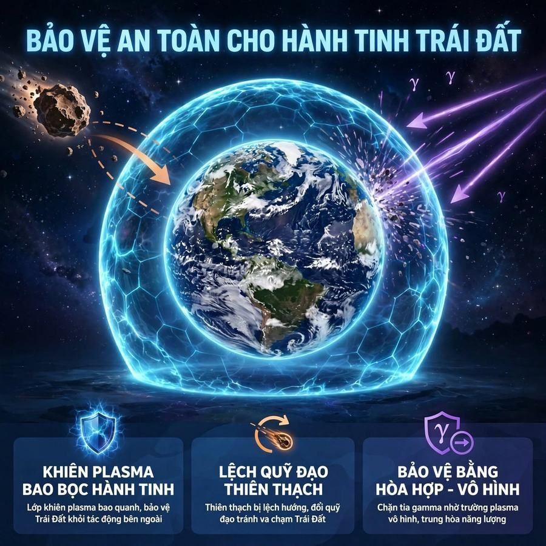

Trang chủ / Chuyên đề 8: Khoa Học & Công Nghệ / Kỳ 75
Chuyên đề 8 · Kỳ 75 / 90
CÔNG NGHỆ NGỤY TRANG TÀNG HÌNH QUANG HỌC & KHIÊN LÁ CHẮN PLASMA

Bạn đã bao giờ tự hỏi: Làm thế nào một phi thuyền ngoài hành tinh khổng lồ có thể hiện diện ngay trên bầu trời một thành phố lớn mà mắt thường hay các hệ thống radar quân sự hiện đại hoàn toàn không thể phát hiện? Tại sao trong nhiều video quay lại các vật thể bay không xác định (UFO), phi thuyền đang bay bỗng nhiên "tan biến" vào khoảng không vũ trụ chỉ trong một chớp mắt, hay chịu đựng được các đòn tấn công bằng tên lửa và tia laser mà không hề để lại một vết xước?
Trong nền khoa học vật lý thô 3D của Trái Đất, việc bảo vệ một phương tiện di chuyển thường phụ thuộc vào việc tăng chiều dày của lớp giáp kim loại thô cứng, hoặc sơn các lớp sơn hấp thụ sóng radar sơ khai. Nhưng đối với các nền văn minh thiên hà tiên tiến, sự bảo vệ tối thượng không nằm ở độ dày của kim loại, mà nằm ở khả năng điều biến Tần số Quang phổ Ánh sáng và Trường Điện từ Plasma!
Bằng cách làm chủ Công nghệ Ngụy trang Tàng hình Quang học (Optical & Electromagnetic Cloaking) và Khiên Lá chắn Plasma Siêu cao tần (Plasma Force Fields), họ có thể khiến các phi thuyền và căn cứ trở nên hoàn toàn vô hình trước mọi giác quan, đồng thời tạo ra lớp rào chắn năng lượng bất xâm phạm trước mọi tác động vật lý và bức hại từ môi trường.
Hãy cùng bước vào thế giới khoa học tối thượng của thiên hà để giải mã trọn vẹn nguyên lý vận hành của Công nghệ Tàng hình Quang học, Trường Đảo chiều Ánh sáng, Khiên Lá chắn Plasma và Hệ thống Bảo vệ Đa chiều!
✦ ✦ ✦1. BỐI CẢNH VÀ HẠN CHẾ CỦA CÔNG NGHỆ BẢO VỆ & TÀNG HÌNH 3D
Để thấy được sự vượt trội của công nghệ thiên hà, trước hết chúng ta cần nhìn lại những rào cản căn bản của nền vật lý thô hiện tại trên Trái Đất trong việc che giấu và bảo vệ các phương tiện không gian.
A. Sự Bế tắc của Công nghệ Stealth và Giáp Kim loại 3D
- Hạn chế của công nghệ tàng hình Stealth hiện tại: Các máy bay quân sự 3D hiện nay chỉ có thể tàng hình một phần trước dải sóng radar nhất định bằng cách thiết kế các góc cạnh tán xạ và phủ sơn hấp thụ sóng từ trường. Tuy nhiên, chúng hoàn toàn không thể tàng hình trước mắt thường, ống kính hồng ngoại hay các hệ thống cảm biến quang học tiên tiến.
- Hạn chế của giáp vật lý thô: Việc tăng độ dày của lớp vỏ kim loại khiến phương tiện trở nên cực kỳ nặng nề, giảm tốc độ di chuyển và tiêu tốn lượng nhiên liệu khổng lồ. Hơn nữa, dù giáp kim loại có dày đến đâu, nó vẫn dễ dàng bị xuyên phá bởi các loại vũ khí năng lượng định hướng hoặc động năng cao.
B. Quan điểm Vật lý Thiên hà về Ánh sáng và Tương tác Năng lượng
Khoa học thiên hà tiên tiến khẳng định những nguyên lý bản chất:
- Ánh sáng là dải sóng dao động: Những gì mắt người hoặc cảm biến nhìn thấy chỉ là dải sóng ánh sáng phản xạ từ bề mặt vật thể đi vào võng mạc. Nếu có thể bẻ cong dải sóng ánh sáng để nó đi vòng qua vật thể mà không bị phản xạ lại, vật thể đó sẽ trở nên hoàn toàn vô hình!
- Vật chất và Năng lượng là một: Bản thân các vật thể vật lý chỉ là những bó năng lượng cô đọng ở một dải tần số. Khi bao bọc vật thể bằng một trường điện từ tần số cao hơn, trường này sẽ làm lệch hướng mọi tác động vật lý từ bên ngoài.

2. CƠ CHẾ CỦA CÔNG NGHỆ NGỤY TRANG TÀNG HÌNH QUANG HỌC (OPTICAL CLOAKING)
Công nghệ tàng hình ngoài hành tinh không phải là một "phép thuật" vô căn cứ, mà vận hành dựa trên việc điều khiển sự bẻ cong của hạt Photon ánh sáng và dải sóng điện từ.
A. Nguyên lý Bẻ cong Ánh sáng (Bending Light Waves)
- Tạo trường khúc xạ gia tốc: Máy phát tàng hình trên phi thuyền phát ra một dải trường điện từ vi mô bao bọc xung quanh vỏ tàu. Trường điện từ này làm thay đổi chỉ số khúc xạ của dải không gian ngay sát vỏ phi thuyền.
- Ánh sáng đi vòng qua vật thể: Khi các chùm ánh sáng Mặt Trời hoặc ánh sáng môi trường chiếu tới phi thuyền, thay vì đập vào vỏ tàu và phản xạ lại mắt người quan sát, chùm ánh sáng bị trường điện từ bẻ cong mượt mà đi vòng qua phi thuyền và tiếp tục truyền đi theo đường thẳng ở phía đối diện!
- Hiệu ứng Nhìn xuyên thấu (See-Through Effect): Người quan sát đứng ở phía trước phi thuyền sẽ nhìn thấy trọn vẹn cảnh vật phía sau phi thuyền như thể phi thuyền hoàn toàn không tồn tại ở đó.
B. Tàng hình Đa Quang phổ (Multi-Spectrum Cloaking)
Không chỉ vô hình trước mắt thường (dải ánh sáng nhìn thấy), hệ thống tàng hình thiên hà còn vô hình trên tất cả các dải quang phổ từ tính khác:
- Tàng hình Hồng ngoại (Infrared Shielding): Hệ thống triệt tiêu hoàn toàn dấu vết nhiệt lượng phát ra từ động cơ và sinh nhiệt của phi thuyền, khiến các ống kính tầm nhiệt không thể phát hiện.
- Tàng hình Sóng Radar & Điện từ (Electromagnetic Absorption): Trường tàng hình hấp thụ hoặc làm lệch hướng toàn bộ dải sóng radio, radar từ tần số thấp đến siêu cao.
- Tàng hình Trường Hấp dẫn & Từ trường (Gravitational Cloaking): Động cơ triệt tiêu hoàn toàn sự biến dạng trọng lực xung quanh tàu, khiến các thiết bị đo độ lệch từ trường hay gia tốc kế hoàn toàn không ghi nhận được sự hiện diện của một khối lượng vật lý.

3. TÀNG HÌNH BẰNG PHƯƠNG PHÁP DỊCH CHUYỂN TẦN SỐ DẠNG THÁI (DENSITY SHIFT CLOAKING)
Ngoài phương pháp bẻ cong ánh sáng quang học, các phi thuyền tiên tiến thuộc dải mật độ cao hơn còn sử dụng một công nghệ tàng hình đẳng cấp hơn: Dịch chuyển Tần số Mật độ (Density Shift Cloaking / Phase-Shifting).
A. Chuyển đổi dải Mật độ từ 3D lên 4D/5D Etheric
- Nâng tần số dao động nguyên tử: Động cơ tàng hình kích hoạt dải sóng siêu tần, nâng tốc độ quay của các hạt electron và proton cấu tạo nên vỏ phi thuyền lên dải tần số cao hơn hẳn dải mật độ 3D vật lý.
- Trở thành Vật thể Thể Phách (Etheric Materialization): Khi tần số dao động nguyên tử vượt qua ngưỡng 3D, phi thuyền chuyển sang trạng thái "thể phách" hoặc dải mật độ 4D/5D.
B. Hiện tượng "Bóng ma Vũ trụ" và Sự Xuất hiện / Tan biến Đột ngột
- Đi xuyên qua vật chất 3D: Trong trạng thái dịch chuyển mật độ, phi thuyền có thể bay xuyên qua các ngọn núi, đi sâu vào lòng đất hay xuyên qua các phi thuyền 3D khác mà không xảy ra bất kỳ sự va chạm vật lý nào!
- Giải thích hiện tượng UFO hiện/ẩn: Khi phi thuyền muốn xuất hiện trước mắt con người, phi công chỉ cần hạ nhẹ tần số dao động nguyên tử xuống dải 3D (hiện hình). Khi muốn biến mất, họ chỉ cần nâng tần số trở lại dải 4D/5D (tan biến). Hiện tượng này diễn ra chỉ trong vài phần nghìn giây, tạo nên cảm giác phi thuyền vừa "bốc hơi" vào không trung!

4. NGUYÊN LÝ HOẠT ĐỘNG CỦA KHIÊN LÁ CHẮN PLASMA (PLASMA FORCE FIELDS)
Nếu công nghệ tàng hình đóng vai trò như "lớp áo tàng hình" che giấu phi thuyền, thì Khiên Lá chắn Plasma (Plasma Force Field / Energy Shield) chính là "bức tường bảo vệ bất xâm phạm" khi phi thuyền bước vào chiến trận hoặc môi trường vũ trụ khắc nghiệt.
A. Cấu tạo và Cơ chế Tạo Trường Plasma Xoáy (Toroidal Plasma Shield)
- Lớp vỏ Plasma lon hóa: Máy phát khiên trên phi thuyền ion hóa một lớp khí bảo vệ (thường là khí Helium hoặc Argon lỏng) xung quanh vỏ tàu, tạo ra một lớp màng plasma cực nóng được giữ cố định bằng dải từ trường siêu mạnh.
- Cấu hình Bánh xe Xuyến (Torus Geometry): Trường plasma này xoay tròn với tốc độ lượng tử xung quanh phi thuyền, tạo thành một bong bóng năng lượng khép kín có khả năng tự phục hồi.
B. Cơ chế Triệt tiêu và Đẩy lùi Tác hại Vật lý
Khi một vật thể đạn động năng, mảnh vỡ thiên thạch hay tên lửa đâm vào khiên plasma:
- Triệt tiêu Động năng tại Ranh giới Khiên: Lực từ trường xoáy cực mạnh của khiên plasma lập tức làm giảm tốc độ của vật thể về bằng không ngay tại bề mặt ranh giới khiên.
- Nhiệt hóa và Làm tan chảy Vật thể: Nhiệt độ siêu cao của lớp plasma ion hóa làm tan chảy và bốc hơi lập tức vật thể vật lý thành các nguyên tử vi mô trước khi nó kịp chạm vào vỏ phi thuyền!
- Phản xạ Vũ khí Năng lượng: Đối với các chùm tia laser hay vũ khí plasma của đối phương, khiên plasma hoạt động như một chiếc gương năng lượng, phản xạ lại chùm tia tấn công ngược trở lại phía kẻ thù hoặc tán xạ nó ra không trung.

5. KHIÊN LÁ CHẮN ĐA TẦN SỐ VÀ KHẢ NĂNG TỰ PHỤC HỒI LƯỢNG TƯ
Một khiên lá chắn plasma thiên hà tiên tiến không chỉ bảo vệ khỏi các đòn tấn công thô, mà còn được tích hợp trí tuệ lượng tử để tự thích ứng với mọi dải tần số tấn công.
A. Tự động Điều chỉnh Tần số Cộng hưởng (Frequency Matching Shield)
- Khi đối phương thay đổi dải tần số của vũ khí năng lượng để tìm cách xuyên qua khiên, máy tính lượng tử trên phi thuyền sẽ quét dải sóng của vụ tấn công trong vòng vài phần micro giây.
- Hệ thống khiên lập tức tự động điều chỉnh dải tần số dao động của lớp plasma trùng khớp hoặc tạo ra tần số triệt tiêu đối kháng, làm vô hiệu hóa hoàn toàn sức tàn phá của đòn tấn công!
B. Tự Phục hồi và Cấp Năng lượng vĩnh cửu từ Lò ZPE
- Khác với các hệ thống lá chắn trong các bộ phim viễn tưởng vốn bị suy yếu và sụp đổ sau vài đòn đánh, khiên plasma của các nền văn minh tiên tiến được cấp nguồn trực tiếp từ Lò phản ứng Năng lượng Điểm Không (Zero-Point Energy).
- Nguồn năng lượng vô hạn giúp khiên lá chắn có khả năng tự phục hồi cường độ mật độ plasma gần như ngay lập tức sau mỗi đợt va chạm, giữ cho phi thuyền luôn ở trạng thái an toàn tuyệt đối.

6. BÀI HỌC VÀ KỶ NGUYÊN BẢO VỆ AN TOÀN CHO HÀNH TINH TRÁI ĐẤT
Sự hiểu biết về Công nghệ Ngụy trang Tàng hình Quang học & Khiên Lá chắn Plasma mang lại những bài học và ứng dụng vĩ đại cho tương lai của nhân loại Trái Đất:
- Bảo vệ Trái Đất khỏi Thảm họa Thiên thạch & Bức xạ Vũ trụ: Khi làm chủ được công nghệ Khiên Lá chắn Plasma quy mô lớn, nhân loại có thể tạo ra các màng bảo vệ bao bọc quanh hành tinh để ngăn chặn các đợt bùng nổ tia Gamma từ Mặt Trời, rác vũ trụ, cũng như làm lệch quỹ đạo của bất kỳ thiên thạch nguy hiểm nào có nguy cơ va chạm với Trái Đất.
- Sự Tự do di chuyển và Hòa bình Không gian: Công nghệ tàng hình và lá chắn năng lượng giúp các phi thuyền khám phá vũ trụ di chuyển an toàn trong các khu vực không gian nguy hiểm mà không cần phải mang theo các vũ khí tấn công thô bạo. Nó chuyển dịch tư duy từ "bảo vệ bằng sự tàn phá" sang "bảo vệ bằng sự hòa hợp và vô hình"!
